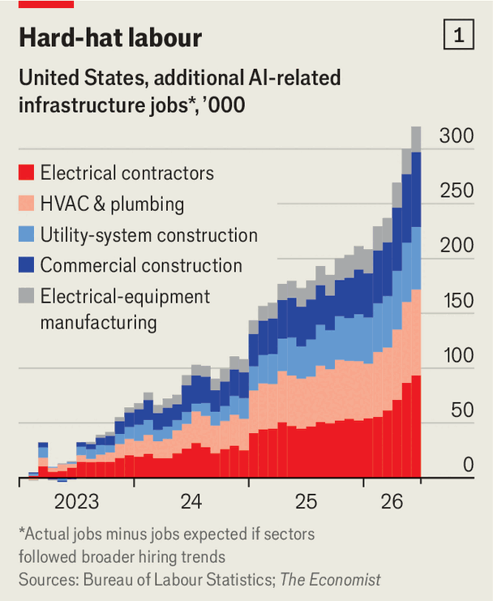
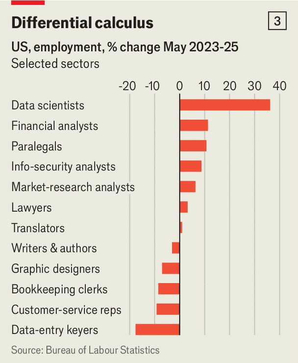

The jobs apocalypse is postponed. An AI jobs boom is here
Initial effects of the technology on employment look positive
Sep 10th 2026
PERHAPS machines will make many humans unemployable eventually—but there is no sign of it yet. On September 4th the Bureau of Labour Statistics reported that the American economy added 162,000 jobs in August, far above expectations. The unemployment rate is 4.1%, lower than in almost 90% of months over the past half-century. Young workers, often cast as the first victims, of artificial intelligence, are doing just fine: the gap between unemployment among 20-24-year-olds and the overall rate is close to a multi-decade low.
Some companies and workers are being severely disrupted by AI. Hiring in professional and business services is running about 10% below the average in 2015-19. Tech giants such as Microsoft and Meta are trimming headcounts as they reorganise their businesses around the technology. Smaller firms such as Block, the owner of Square and Cash App, and Intuit, the maker of TurboTax and QuickBooks, are replacing people with bots. American companies have announced some 16,000 AI-related job cuts a month on average so far this year, according to Challenger, Gray & Christmas, an employment consultancy.
But AI-related layoffs get lost in a churning jobs market where employers shed roughly 1.7m workers in a typical month. And the evidence so far is that AI is already creating a lot of jobs to replace those it has destroyed. The vast sums pouring into data centres and power generation have set off a race for construction and infrastructure workers. AI startups are hiring like there is no tomorrow. Incumbents racing to keep up are creating new AI roles. And by making some workers more productive, AI may be increasing demand for their services.
Add it all up, and The Economist estimates that AI has so far created around 1m new jobs in America. That easily exceeds the roughly 200,000 lay-offs attributed to AI since mid-2023, and appears more than enough to offset weaker hiring in many back-office roles. America’s AI infrastructure splurge has created many of them. The spending on the kit needed to make AI run—from chips and servers to data centres, cooling systems and power—is roughly $500bn a year above what it was in 2022, when the world got to know ChatGPT, calculates Goldman Sachs, a bank. Data-centre construction alone is proceeding at an annual rate of more than $75bn, nearly 60% higher than a year ago, according to data from America’s Census Bureau. That building spree requires armies of workers: electricians to wire server racks, HVAC specialists to stop these from overheating, grid engineers to hook them up to the power supply and technicians to install and maintain the machines.

The hiring boom is visible in the numbers. The Economist tracked five industries at the heart of the data-centre build-out, from electrical contracting to equipment manufacturing. Since 2023 employment in them has risen by roughly 320,000 more than broader construction and manufacturing trends would suggest (see chart 1). The Bureau of Labour Statistics (BLS) expects utilities to be the fastest-growing big sector between now and 2035.
Not all of those jobs owe their existence to AI—grid upgrades and other factory building matters, too. But lots of them do. Indeed, a jobs website, finds that data-centre vacancies have more than doubled in two years even as job postings overall have fallen. LinkedIn, a social network for strivers, estimates that nearly half a million data-centre jobs were created between 2023 and 2025 in America, with technicians and engineers among the most common recent hires.
The scramble for workers is showing up in pay cheques, too. Indeed finds that installation and maintenance jobs at data centres advertise wages about 40% above similar work elsewhere. Official data tell a similar story. Between January and June average hourly earnings rose by over 13% in electrical-equipment manufacturing and nearly 8% among electrical contractors.
Even with the pay gains, workers are still not easy to find. On a recent visit to a transformer factory, Donald Leavens of the National Electrical Manufacturers Association asked the company’s chief executive what help she needed most. “Can you come up here and run one of our lines for me?” she replied.
It is not just hard hats that are proliferating. AI is also creating a new class of white-collar jobs. Engineers build the models, data annotators label their inputs and judge their answers, “forward-deployed” engineers adapt them for customers, and newly minted “heads of AI” decide what companies should do with the technology. Some of these roles barely existed until recently. Many are quickly growing in number. Postings for heads of AI, AI engineers and directors of AI have roughly doubled since 2023-24, according to LinkedIn.
The numbers are starting to add up. Preliminary research by Gad Levanon, chief economist at the Burning Glass Institute, uses the research outfit’s career history database (which mostly relies on LinkedIn career histories) to identify jobs that would not exist without AI, whether at AI-native firms or because they are AI-specific roles at other companies. He reckons roughly 1% of professional jobs are now “AI jobs”—on the order of 1m positions in America. In computer occupations and life sciences—including researchers using AI to discover new drugs—the share is 4-5%. LinkedIn’s own analysis points to roughly 640,000 new AI-specific jobs between 2023 and 2025. “To date, the evidence suggests that AI has been a net job creator,” says Kory Kantenga, head of economics for the Americas at LinkedIn.

The Economist tracked employment in professional occupations closest to the AI boom—engineers, software developers, mathematicians and data scientists—and compared their growth since 2022 with professional employment overall. These roles have added roughly 730,000 jobs above trend in recent years (see chart 2). AI will not have created every single one of them. But it has almost certainly created quite a few.
A third source of jobs comes from productivity gains. AI allows lawyers to draft contracts faster and analysts to comb through financial filings in minutes. If higher productivity lowers the cost of professional services, it is possible that demand for them can rise enough to create more work overall.

Some of the occupations once believed to be most vulnerable to AI appear to be benefiting from this effect. Between 2023 and 2025 employment among paralegals rose by about 11% and among market-research analysts by 6%, compared with a national average of around 2% (see chart 3). Despite dire warnings of imminent lay-offs, professional services are projected to keep growing rapidly thanks to demand for AI systems and consulting, according to BLS forecasts.
Some professions are suffering. Since January 2023 employment has fallen by about 10% among customer-service workers, and by roughly 15% among secretaries and administrative assistants. All three are heavy on routine tasks at which AI agents increasingly excel. The BLS expects office and administrative-support occupations to shed 752,000 jobs by 2035.
But as AI’s capabilities expand, it is likely to keep creating new jobs. More than 6m Americans now work in computer-related occupations that did not exist in the pre-computer era. Another 8m work in new industries like the gig economy, e-commerce and content creation. Tomorrow’s workers may supervise teams of autonomous agents or settle disputes between them. Fanciful? Maybe. But so was being an influencer a decade or two ago.■